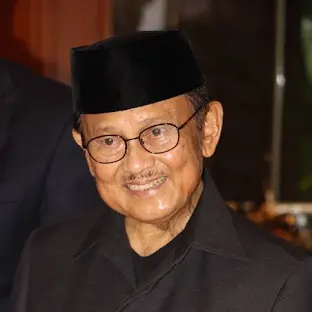

B.J. Habibie
Bacharuddin Jusuf Habibie (25 Juni 1936 – 11 September 2019) adalah Presiden Indonesia ketiga yang menjabat sejak tahun 1998 sampai 1999, menggantikan Soeharto yang mengundurkan diri dari jabatan presiden pada tanggal 21 Mei 1998. Sebelumnya, ia menjabat sebagai Wakil Presiden Indonesia ketujuh. Sebelum memasuki dunia politik, Habibie dikenal luas sebagai seorang profesor dan ilmuwan dalam teknologi aviasi internasional dan satu-satunya presiden Indonesia hingga saat ini yang berlatarbelakang teknokrat.
B.J. Habibie kemudian digantikan oleh Abdurrahman Wahid (Gus Dur) yang terpilih sebagai presiden pada 20 Oktober 1999 oleh MPR hasil Pemilu 1999. Dengan menjabat selama 2 bulan dan 7 hari (sebagai wakil presiden) dan juga selama 1 tahun dan 5 bulan (sebagai presiden), B. J. Habibie merupakan Wakil Presiden dan juga Presiden Indonesia dengan masa jabatan terpendek. B. J. Habibie merupakan presiden Indonesia pertama yang terlahir di luar Jawa, tepatnya di Parepare, Sulawesi Selatan. Ia berasal dari etnis Bugis-Gorontalo dari garis keturunan ayahnya yang berasal dari Kabila, Gorontalo dan etnis Jawa dari ibunya yang berasal dari Yogyakarta.
Bacharuddin Jusuf Habibie (B. J. Habibie) merupakan anak keempat dari delapan bersaudara, pasangan Alwi Abdul Jalil Habibie dan R.A. Tuti Marini Puspowardojo. Ayahnya yang berprofesi sebagai ahli pertanian yang berasal dari etnis Bugis-Gorontalo, sedangkan ibunya berasal dari etnis Jawa.
Menurut wawancara pribadinya bersama Jawa Pos pada tahun 2016, kedua orangtuanya terpaksa meninggalkan keluarga besar mereka karena masalah perbedaan budaya. Alwi, yang merupakan orang Bugis-Gorontalo, tidak diterima oleh keluarga Tuti yang berasal dari ningrat Jogjakarta, demikian pula sebaliknya. Dalam wawancara tersebut, Habibie menjelaskan bahwa keluarganya mempertahankan kebiasaan menikah di dalam keluarga untuk menjaga kepemilikan tanah atau harta. Ini dilakukan agar tidak ada perebutan harta atau tanah oleh pihak luar.
Marga Habibie dicatat secara historis berasal dari wilayah Kabila, sebuah daerah di Kabupaten Bone Bolango, Provinsi Gorontalo. Garis keturunannya dimulai dari Lamakasa, seorang Bugis yang menetap di Gorontalo dan menikahi seorang wanita lokal bernama Hawaria. Mereka memiliki beberapa anak, salah satunya adalah Habibie. Alwi Abdul Jalil Habibie, lahir pada tahun 1908, adalah keturunan dari Lamakasa. Dari silsilah keluarga, kakek dari B.J. Habibie merupakan seorang pemuka agama, anggota majelis peradilan agama, serta salah satu pemangku adat Gorontalo yang tersohor pada saat itu. Keluarga besar Habibie di Gorontalo terkenal gemar beternak sapi, memiliki kuda dalam jumlah yang banyak, serta memiliki perkebunan kopi.